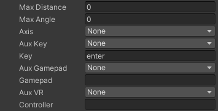

- Max Distance: the maximum distance between a person and the object containing this element, by which the control would be valid. If set to 0 or less, it will be ignored.
- Max Angle: the maximum angle between the person’s looking direction (or an person-oid object) and to the object or an axis (see below) that permits the control. If set to 0 or less, it will be ignored.
- Axis: a local axis of the object that is used to calculate the angle between a person and that objecct (see above).
- Aux key: this is a key (alt, shift or ctrl) that if hold, Tames checks if the Key(s) is pressed.
- Key: the key or mouse button.
- Aux Gamepad: the auxiliary controls on a gamepad (the options are Left and Right Triggers).
- Gamepad: the control on gamepad.
- Aux VR: the auxiliary controls on a VR controller (only tested on Valve Index), the same as gamepad.
- Controller: the button on the VR controller.
|
 |